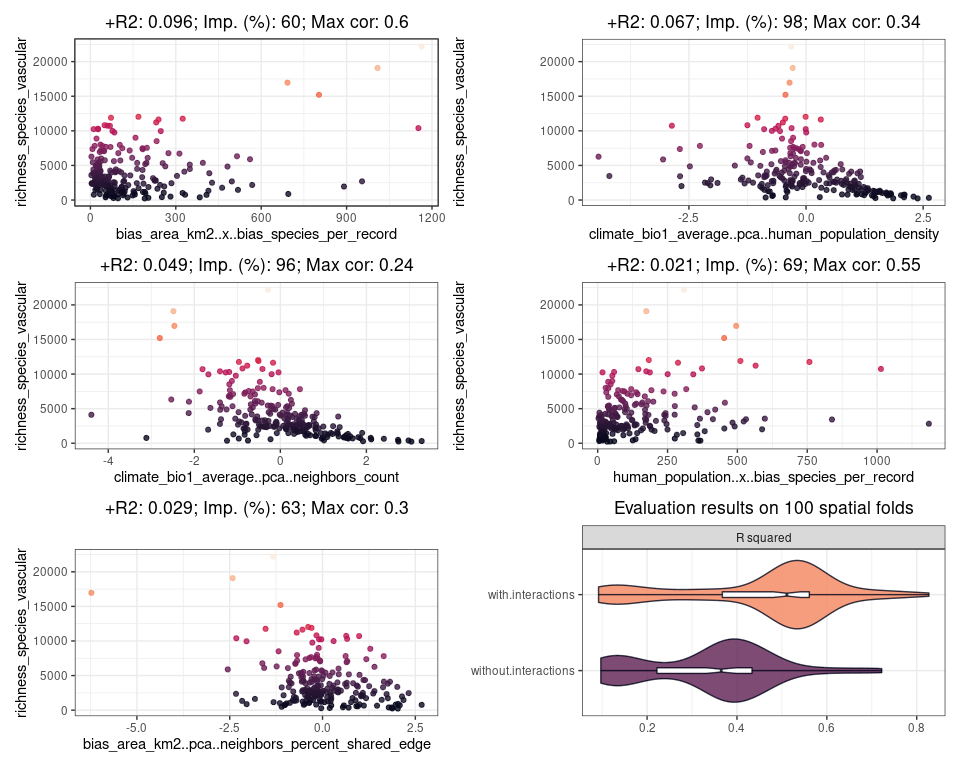
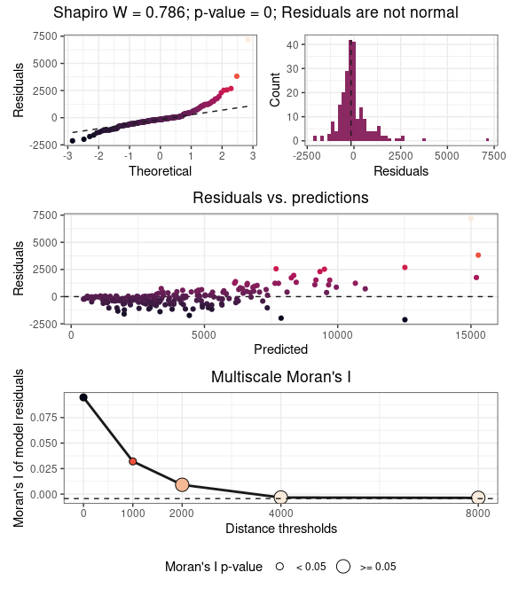
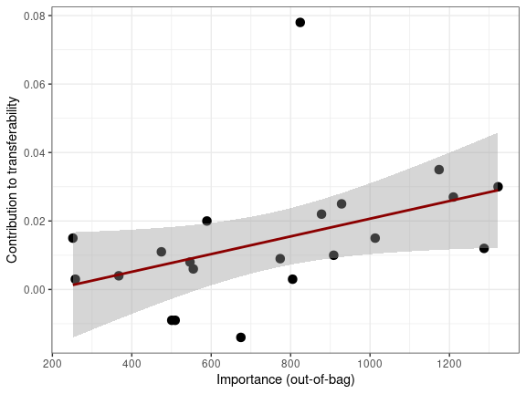
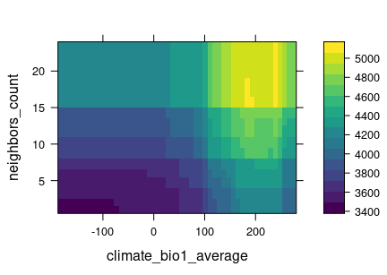
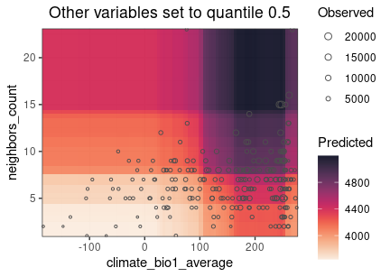

- Introduction
- Development
- Applications
- Install
- Data requirements
- Example data
- Finding promising variable interactions
- Reducing multicollinearity in the predictors
- Fitting a non-spatial Random Forest model
- Tuning Random Forest hyperparameters
- Fitting a spatial model
- Assessing model performance on spatially independent folds
- Comparing several models
Introduction
The package spatialRF facilitates fitting spatial regression models on regular or irregular data with Random Forest by generating spatial predictors that allow the model to take into account the spatial structure of the training data. The end goal is minimizing the spatial autocorrelation of the model residuals as much as possible.
Two main methods to generate spatial predictors from the distance matrix of the data points are implemented in the package:
- Principal coordinate analysis of neighbor matrices (Dray, Legendre, and Peres-Neto 2006).
- Distance matrix columns as explanatory variables (Hengl et al. 2018).
The package is designed to minimize the amount of code required to fit a spatial model from a training dataset, the names of the response and the predictors, and a distance matrix, as the example below shows.
spatial.model <- rf_spatial( data = your_dataframe, dependent.variable.name = "your_response_variable", predictor.variable.names = c("predictor1", "predictor2", ..., "predictorN"), distance.matrix = your_distance_matrix )
The package, that uses the ranger package under the hood (Wright and Ziegler 2017), also provides tools to identify potentially interesting variable interactions, tune random forest hyperparameters, assess model performance on spatially independent data folds, and examine the resulting models via importance plots, response curves, and response surfaces.
Development
This package is reaching its final form, and big changes are not expected at this stage. However, it has many functions, and even though all them have been tested, only one dataset has been used for those tests. You will find bugs, and something will go wrong almost surely. If you have time to report bugs, please, do so in any of the following ways:
- Open a new issue in the Issues GitHub page of the package.
- Send me an email explaining the issue and the error messages with enough detail at blasbenito at gmail dot com.
- Send a direct message to my twitter account explaining the issue.
I will do my best to solve any issues ASAP!
Applications
The goal of spatialRF is to help fitting explanatory spatial regression, where the target is to understand how a set of predictors and the spatial structure of the data influences a response variable. Therefore, the analyses implemented in the package can be applied to any spatial dataset, regular or irregular, with a sample size between ~100 and ~5000 cases (the higher end will depend on the RAM memory available), a quantitative response variable, and a more or less large set of predictive variables.
Due to the special nature of the spatial predictors it uses to represent the spatial structure of the training data, there are many things this package cannot do:
Predict model results over raster data.
Predict a model result over another region with a different spatial structure.
Work with “big data”, whatever that means.
Fit species distribution models (can deal with abundance modeling though).
Imputation or extrapolation (it can be done, but models based on spatial predictors are hardly transferable).
Take temporal autocorrelation into account (but this is something that might be implemented later on).
If after considering these limitations you are still interested, follow me, I will show you how it works.
Install
The package is not yet in the CRAN repositories, so at the moment it must be installed from GitHub as follows.
remotes::install_github( repo = "blasbenito/spatialRF", ref = "main", force = TRUE, quiet = TRUE ) library(spatialRF)
There are a few other libraries that will be useful during this tutorial.
Data requirements
The data required to fit random forest models with spatialRF must fulfill several conditions:
-
The number of rows must be somewhere between 100 and ~5000, but that will depend on the RAM available in your system. However, this limitation only affects spatial analyses performed with
rf_spatial(), while all other modeling and plotting functions should work without a distance matrix (if they don’t tell me, that’d be a bug!), and therefore analyses in large datasets can still be done with the package. - The number of predictors should be larger than 3, fitting a Random Forest model is moot otherwise.
- Factors in the response or the predictors are not explicitly supported in the package, they may work, or they won’t, but in any case, I designed this package for quantitative data alone.
-
Must be free of
NA. You can check if there are NA records withsum(apply(df, 2, is.na)). If the result is larger than 0, then just executedf <- na.omit(df)to remove rows with empty cells. -
Columns cannot have zero variance. This condition can be checked with
apply(df, 2, var) == 0. Columns yielding TRUE should be removed. -
Columns must not yield
NaNorInfwhen scaled. You can check each condition withsum(apply(scale(df), 2, is.nan))andsum(apply(scale(df), 2, is.infinite)). If higher than 0, you can find what columns are giving issues withsapply(df, function(x)any(is.nan(x)))andsapply(df, function(x)any(is.infinite(x))). Any column yieldingTRUEwill generate issues while trying to fit models withspatialRF.
Example data
The package includes an example dataset that fulfills the conditions mentioned above, named plant_richness_df. It is a data frame with plant species richness and predictors for 227 ecoregions in the Americas, and a distance matrix among the ecoregion edges named, well, distance_matrix.
data(plant_richness_df) data(distance_matrix) #names of the response variable and the predictors dependent.variable.name <- "richness_species_vascular" predictor.variable.names <- colnames(plant_richness_df)[5:21]
The response variable of plant_richness_df is “richness_species_vascular”, with the total count of vascular plant species found on each ecoregion. The figure below shows the centroids of each ecoregion along with their associated value of the response variable.
The predictors (columns 5 to 21) represent diverse factors that may influence plant richness such as sampling bias, the area of the ecoregion, climatic variables, human presence and impact, topography, geographical fragmentation, and features of the neighbors of each ecoregion. The figure below shows the scatterplots of the response variable (y axis) against each predictor (x axis).

Finding promising variable interactions
Random Forests already takes into account variable interactions of the form “variable a becomes important when b is higher than x”. However, Random Forest can also take advantage of variable interactions of the form a * b, as they are commonly defined in regression models.
The function rf_interactions() tests all possible interactions among predictors by using each one of them in a separate model, and suggesting the ones with the higher potential contribution to the model’s R squared and the higher relative importance (presented as a percentage of the maximum importance of a variable in the model).
interactions <- rf_interactions( data = plant_richness_df, dependent.variable.name = dependent.variable.name, predictor.variable.names = predictor.variable.names )
## Testing 36 candidate interactions.
## 3 potential interactions identified.
## ┌─────────────────────────┬───────────────────────┬────────────────┐
## │ Interaction │ Importance (% of max) │ R2 improvement │
## ├─────────────────────────┼───────────────────────┼────────────────┤
## │ human_population_X_bias │ 72.1 │ 0.017 │
## │ _area_km2 │ │ │
## ├─────────────────────────┼───────────────────────┼────────────────┤
## │ climate_bio1_average_X_ │ 72.6 │ 0.010 │
## │ bias_area_km2 │ │ │
## ├─────────────────────────┼───────────────────────┼────────────────┤
## │ bias_area_km2_X_bias_sp │ 59 │ 0.0374 │
## │ ecies_per_record │ │ │
## └─────────────────────────┴───────────────────────┴────────────────┘
Here rf_interactions() suggests several candidate interactions ordered by their impact on the model. The function cannot say whether an interaction makes sense, and it is up to the user to choose wisely whether to select an interaction or not.
For the sake of the example, I will choose climate_bio1_average_X_bias_area_km2, hypothesizing that ecoregions with higher area (bias_area_km2) and energy (represented by the annual temperature, climate_bio1_average) will have more species of vascular plants (this is just an example, many other rationales are possible when choosing between candidate interactions). The data required to add the interaction to the training data is in the output of rf_interactions().
#adding interaction column to the training data plant_richness_df[, "climate_bio1_average_X_bias_area_km2"] <- interactions$columns[, "climate_bio1_average_X_bias_area_km2"] #adding interaction name to predictor.variable.names predictor.variable.names <- c(predictor.variable.names, "climate_bio1_average_X_bias_area_km2")
Reducing multicollinearity in the predictors
The functions auto_cor() and auto_vif() help reduce redundancy in the predictors by using different criteria (bivariate R squared vs. variance inflation factor), while allowing the user to define an order of preference, which can be based either on domain expertise or on a quantitative assessment. The preference order is defined as a character vector in the preference.order argument of both functions, and does not need to include the names of all predictors, but just the ones the user would like to keep in the analysis.
In the example below I give preference to the interaction suggested by rf_interactions() over it’s two components, and prioritize climate over other types of predictors (any other choice would be valid, it just depends on the scope of the study). These rules are applied to both auto_cor() and auto_vif(), that are executed sequentially by using the %>% pipe from the magrittr package.
Notice that I have set cor.threshold and vif.threshold to low values because the predictors in plant_richness_df already have little multicollinearity,. The default values (cor.threshold = 0.75 and vif.threshold = 5) should work well when combined together for any other set of predictors.
preference.order <- c( "climate_bio1_average_X_bias_area_km2", "climate_aridity_index_average", "climate_hypervolume", "climate_bio1_average", "climate_bio15_minimum", "bias_area_km2" ) predictor.variable.names <- auto_cor( x = plant_richness_df[, predictor.variable.names], cor.threshold = 0.6, preference.order = preference.order ) %>% auto_vif( vif.threshold = 2.5, preference.order = preference.order )
## [auto_cor()]: Removed variables: bias_area_km2, human_footprint_average
## [auto_vif()]: Removed variables: human_populationThe output of auto_cor() or auto_vif() is of the class “variable_selection”, that can be used as input for the argument predictor.variable.names of any modeling function within the package. An example is shown in the next section.
Fitting a non-spatial Random Forest model
To fit basic Random Forest models spatialRF provides the rf() function. It takes the training data, the names of the response and the predictors, and optionally (to assess the spatial autocorrelation of the residuals), the distance matrix, and a vector of distance thresholds (in the same units as the distances in distance_matrix).
These distance thresholds are the neighborhoods at which the model will check the spatial autocorrelation of the residuals. Their values may depend on the spatial scale of the data, and the ecological system under study.
Notice that here I plug the object predictor.variable.names, output of auto_cor() and auto_vif(), directly into the predictor.variable.names argument.
model.non.spatial <- rf( data = plant_richness_df, dependent.variable.name = dependent.variable.name, predictor.variable.names = predictor.variable.names, distance.matrix = distance_matrix, distance.thresholds = c(0, 1500, 3000), seed = 100, #just for reproducibility verbose = FALSE )
The model output can be printed or plotted with a plethora of functions such as print(), print_importance(), print_performance(), plot_importance(), print_moran(), plot_moran(), plot_response_curves(), or plot_response_surfaces), among many others.
plot_response_curves(model.non.spatial)
In the response curves above, the other predictors are set to their quantiles 0.1, 0.5, and 0.8, but the user can change this behavior by modifying the values of the quantiles argument.
plot_response_surfaces( x = model.non.spatial, a = "climate_bio1_average", b = "neighbors_count" )

In this response surface, the predictors that are not shown are set to their medians (but other quantiles are possible).
plot_importance(model.non.spatial, verbose = FALSE)

Predicting onto new data
Models fitted with rf() and other rf_X() functions within the package can be predicted onto new data just as it is done with ranger() models:
predicted <- stats::predict( object = model.non.spatial, data = plant_richness_df, type = "response" )$predictions
Repeating a model execution
Random Forest is an stochastic algorithm that yields slightly different results on each run unless a random seed is set. This particularity has implications for the interpretation of variable importance scores. For example, in the plot above, the difference in importance between the predictors climate_hypervolume and climate_bio1_average_X_bias_area_km2 could be just the result of chance. The function rf_repeat() repeats a model execution and yields the distribution of importance scores of the predictors across executions.
model.non.spatial.repeat <- rf_repeat( model = model.non.spatial, repetitions = 30, verbose = FALSE ) plot_importance(model.non.spatial.repeat, verbose = FALSE)

After 30 model repetitions it is clear that the difference in importance between climate_hypervolume and climate_bio1_average_X_bias_area_km2 is not the result of chance.
The response curves of models fitted with rf_repeat() can be plotted with plot_response_curves() as well. The median prediction is shown with a thicker line.
plot_response_curves(model.non.spatial.repeat)
 The function get_response_curves() returns a data frame with the data required to make custom plots of the response curves.
plot.df <- get_response_curves(model.non.spatial.repeat)
| response | predictor | quantile | model | predictor.name | response.name |
|---|---|---|---|---|---|
| 1347.937 | -183.8091 | 0.1 | 1 | climate_bio1_average | richness_species_vascular |
| 1347.937 | -181.5008 | 0.1 | 1 | climate_bio1_average | richness_species_vascular |
| 1347.937 | -179.1924 | 0.1 | 1 | climate_bio1_average | richness_species_vascular |
| 1347.937 | -176.8841 | 0.1 | 1 | climate_bio1_average | richness_species_vascular |
| 1347.937 | -174.5758 | 0.1 | 1 | climate_bio1_average | richness_species_vascular |
| 1347.937 | -172.2675 | 0.1 | 1 | climate_bio1_average | richness_species_vascular |
| 1347.937 | -169.9592 | 0.1 | 1 | climate_bio1_average | richness_species_vascular |
| 1347.937 | -167.6509 | 0.1 | 1 | climate_bio1_average | richness_species_vascular |
| 1347.937 | -165.3426 | 0.1 | 1 | climate_bio1_average | richness_species_vascular |
| 1347.937 | -163.0343 | 0.1 | 1 | climate_bio1_average | richness_species_vascular |
Tuning Random Forest hyperparameters
The model fitted above was based on the default hyperparameter values provided by ranger(), and those might not be the most adequate ones for a given dataset. The function rf_tuning() helps the user to choose sensible values for three Random Forest hyperparameters that are critical to model performance:
-
num.trees: number of regression trees in the forest. -
mtry: number of variables to choose from on each tree split. -
min.node.size: minimum number of cases on a terminal node.
Model tuning can be done on out-of-bag (method = "oob") or spatial cross-validation (method = "spatial.cv") R squared values. The example below shows the out-of-bag approach because I will explain spatial cross-validation with rf_evaluate() later in this document.
model.non.spatial.tuned <- rf_tuning( model = model.non.spatial, method = "spatial.cv", xy = plant_richness_df[, c("x", "y")], repetitions = 30, num.trees = c(500, 1000), mtry = seq( 2, 14, #equal or lower than the number of predictors by = 3 ), min.node.size = c(5, 10, 20) )
## Exploring 30 combinations of hyperparameters.
## Best hyperparameters:
## - num.trees: 1000
## - mtry: 14
## - min.node.size: 5
## R squared gain: 0.061
The function rf_tuning() returns a model fitted with the same data as the original model, but using the best hyperparameters found during tuning. Model tuning has helped to a very small improvement in performance measures (+ 0.061 R squared), so from here, we can keep working with model.non.spatial.tuned.
Fitting a spatial model
The spatial autocorrelation of the residuals of model.non.spatial, measured with Moran’s I, can be plotted with plot_moran().
plot_moran(model.non.spatial.tuned, verbose = FALSE)

According to the plot, the spatial autocorrelation of the residuals is highly positive for a neighborhood of 0 km, while it becomes non-significant (p-value > 0.05, whatever that means) at 1500 and 3000 km. To reduce the spatial autocorrelation of the residuals as much as possible, the non-spatial tuned model fitted above can be converted into a spatial model easily with rf_spatial(), that by default uses the Moran’s Eigenvector Maps method.
model.spatial <- rf_spatial( model = model.non.spatial.tuned, method = "mem.moran.sequential", #default method verbose = FALSE )
The plot below shows the Moran’s I of the residuals of the spatial model. It shows that rf_spatial() has managed to remove the spatial autocorrelation (p-values of the Moran’s I estimates for each neighborhood distance are higher than 0.05) of the model residuals for every neighborhood distance.
plot_moran(model.spatial, verbose = FALSE)

If we compare the variable importance plots of both models, we can see that the spatial model has an additional set of dots under the name “spatial_predictors”, and that the maximum importance of a few of these spatial predictors matches the importance of the most relevant non-spatial predictors.
p1 <- plot_importance( model.non.spatial, verbose = FALSE) + ggplot2::ggtitle("Non-spatial model") p2 <- plot_importance( model.spatial, verbose = FALSE) + ggplot2::ggtitle("Spatial model") p1 | p2

If we take a look to the ten most important variables in model.spatial we will see that a few of them are spatial predictors.
| variable | importance |
|---|---|
| spatial_predictor_0_2 | 0.152 |
| climate_bio1_average_X_bias_area_km2 | 0.142 |
| climate_hypervolume | 0.137 |
| climate_bio1_average | 0.131 |
| bias_species_per_record | 0.073 |
| spatial_predictor_0_1 | 0.060 |
| spatial_predictor_0_6 | 0.047 |
| spatial_predictor_3000_1 | 0.047 |
| spatial_predictor_0_5 | 0.045 |
| neighbors_count | 0.038 |
Spatial predictors are named spatial_predictor_X_Y, where X is the neighborhood distance at which the predictor has been generated, and Y is the index of the predictor.
Spatial predictors, as shown below, are smooth surfaces representing neighborhood among records at different spatial scales.

The spatial predictors in the spatial model have been generated using the method “mem.moran.sequential” (function’s default), that mimics the Moran’s Eigenvector Maps method described in (Dray, Legendre, and Peres-Neto 2006).
In brief, the method consist on transforming the distance matrix into a double-centered matrix of normalized weights, to then compute the positive eigenvectors of the weights matrix (a.k.a, Moran’s Eigenvector Maps, or MEMs).
The MEMs are included in the model one by one in the order of their Moran’s I, and the subset of MEMs maximizing the model’s R squared and minimizing the Moran’s I of the residuals and the number of MEMs added to the model are selected, as shown in the optimization plot below (dots linked by lines represent the selected spatial predictors). The selection procedure is performed by the function select_spatial_predictors_sequential().

Tuning spatial models
Spatial models fitted with rf_spatial() can be tuned as well with rf_tuning(). However, tuning may in some cases increase the spatial autocorrelation of the model residuals. In that case, the function will return a message explaining the situation, and the original model without any sort of tuning applied
model.spatial.tuned <- rf_tuning( model = model.spatial, method = "spatial.cv", xy = plant_richness_df[, c("x", "y")], repetitions = 30, num.trees = c(500, 1000), mtry = seq( 2, length(model.spatial$ranger.arguments$predictor.variable.names), by = 9), min.node.size = c(5, 20) )
## Exploring 24 combinations of hyperparameters.
## Best hyperparameters:
## - num.trees: 1000
## - mtry: 47
## - min.node.size: 5
## R squared gain: 0.015
Assessing model performance on spatially independent folds
The function rf_evaluate() separates the training data into a number of spatially independent training and testing folds, fits a model on each training fold, predicts over each testing fold, and computes performance measures, to finally aggregate them across model repetitions. Let’s see how it works.
model.spatial.tuned <- rf_evaluate( model = model.spatial.tuned, xy = plant_richness_df[, c("x", "y")], #data coordinates repetitions = 30, #number of folds training.fraction = 0.8, #training data fraction metrics = c("r.squared", "rmse"), verbose = FALSE )
The function generates a new slot in the model named “evaluation” with several objects that summarize the spatial cross-validation results.
names(model.spatial$evaluation)
## NULLThe slot “spatial.folds”, produced by make_spatial_folds(), contains the indices of the training and testing cases for each cross-validation repetition. The maps below show two sets of training and testing spatial folds.

The functions plot_evaluation() and print_evaluation() allow to check the evaluation results as a plot or as a table. The boxplot below shows the original performance scores of the “Full” model (model.spatial.tuned), and the distribution of performance scores of the model fitted on the training data (“Training”), its prediction over the “Testing” data. From these performance scores, only the ones labeled as “Testing” represent model performance on unseen data.
plot_evaluation(model.spatial.tuned, notch = TRUE)

The plot shows that the spatial model does a lousy job in predicting over unseen data.
Comparing several models
The function rf_evaluate() only assesses the predictive performance on unseen data of one model at a time. If the goal is to compare two models, rf_evaluate() can be indeed ran twice, but spatialRF offers a more convenient option named rf_compare(). It takes as input a named list with as many models as the user needs to compare.
comparison <- rf_compare( models = list( `Non-spatial` = model.non.spatial, `Non-spatial tuned` = model.non.spatial.tuned, `Spatial` = model.spatial, `Spatial tuned` = model.spatial.tuned ), xy = plant_richness_df[, c("x", "y")], metrics = c("r.squared", "rmse"), notch = TRUE )

| Model | Metric | Mean |
|---|---|---|
| Non-spatial | r.squared | 0.483 |
| Non-spatial tuned | r.squared | 0.492 |
| Spatial | r.squared | 0.478 |
| Spatial tuned | r.squared | 0.458 |
| Non-spatial | rmse | 2496.102 |
| Non-spatial tuned | rmse | 2333.807 |
| Spatial | rmse | 2503.165 |
| Spatial tuned | rmse | 2504.872 |
The comparison shows that the non-spatial models performed slightly better than the spatial ones, but with overlapping notches, indicating that the medians of the R squared and RMSE distributions are not statistically different. That is a small trade-off, considering that the spatial model incorporates information about the spatial structure of the data, and its residuals are not spatially correlated.